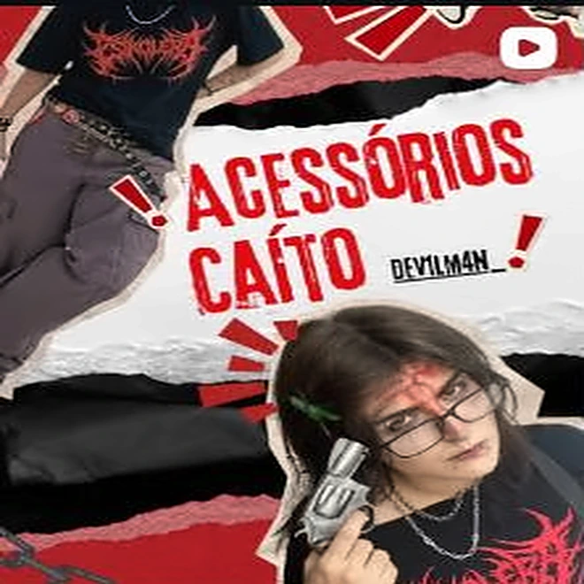

01
01Caracterização
Cor, expressão e materiais que transformam referências em presença.
COSPLAYER · COSMAKER · ARTISTA
Uma coleção de transformações, detalhes e histórias contadas através do cosplay — do primeiro esboço à presença em cena.
S A K U R A I / COSPLAY & CREATIVE WORK
01 / GALERIA
Entre palco, oficina e transformação. Explore uma seleção visual do universo de Sakurai.
Fotografias de prévia recortadas dos prints enviados. Para a versão definitiva, substituir por originais autorizados em alta resolução. As classificações são propostas editoriais, não afirmações sobre autoria de cada elemento.
02 / SOBRE A ARTISTA
Sakurai é artista, cosplayer e cosmaker. Neste espaço, a expressão, a construção visual e o cuidado com cada detalhe ocupam o centro da narrativa.
Um portfólio pensado para reunir palco, criação e os bastidores que normalmente ficam espalhados pelo feed.
 CRAFT
CRAFT03 / POR TRÁS DA CENA
Da ideia ao acabamento e à fotografia: um olhar para os diferentes momentos de criação.
01Cor, expressão e materiais que transformam referências em presença.

02Acessórios e peças que ajudam a construir a identidade visual de cada projeto.
 03
03Quando figurino, personagem e performance se encontram diante do público.
04 / CONTATO & LINKS
Para acompanhar novos projetos, conversar sobre eventos ou entrar em contato para parcerias artísticas.
Atualmente sem agenda de encomendas. Portfólio artístico — sem contratação de figurinos.